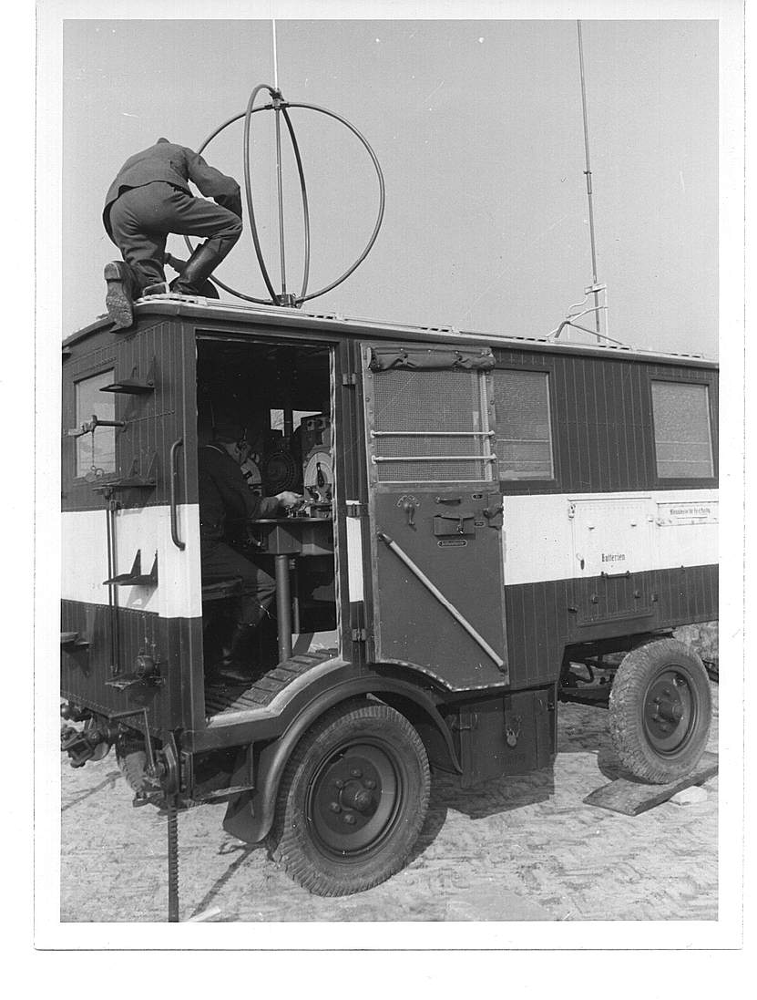
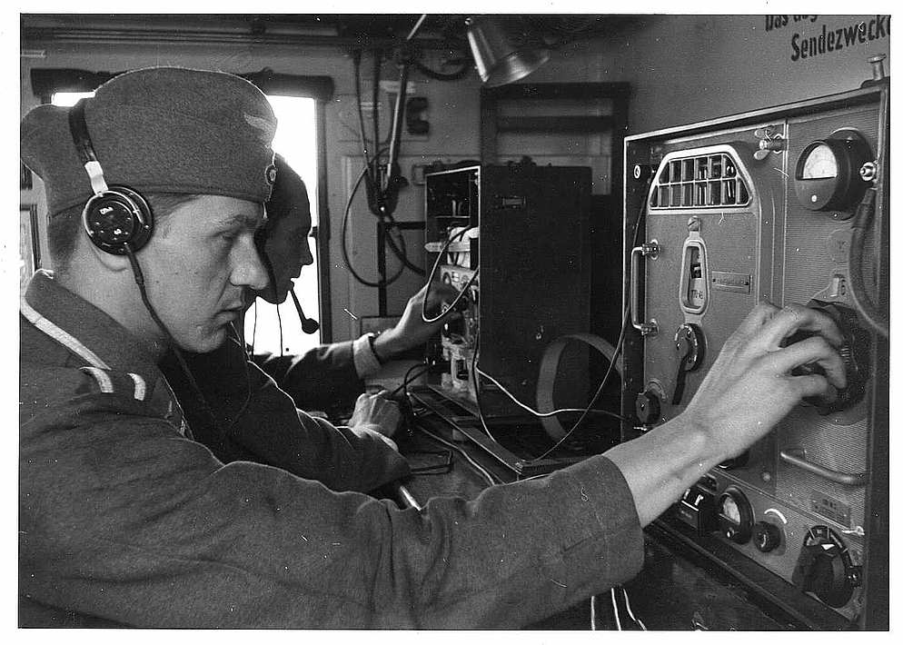
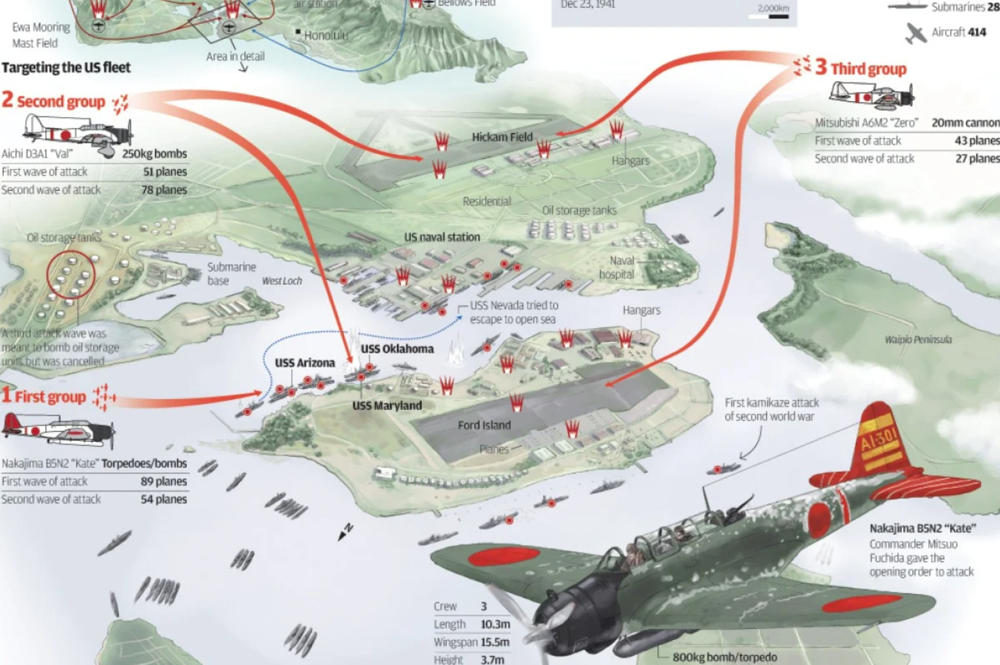
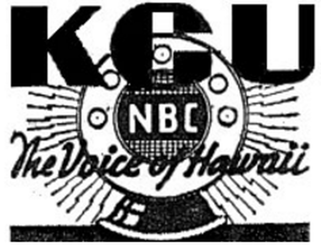
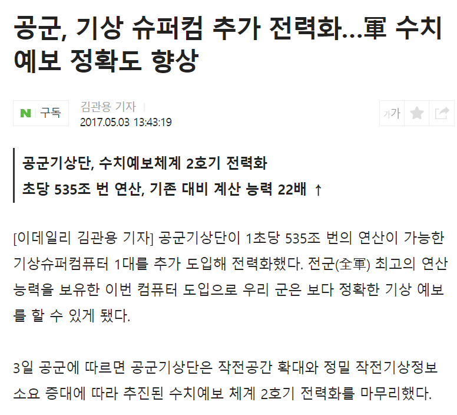
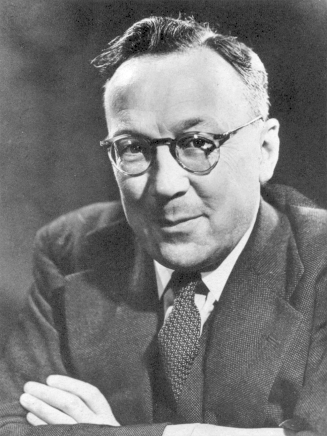
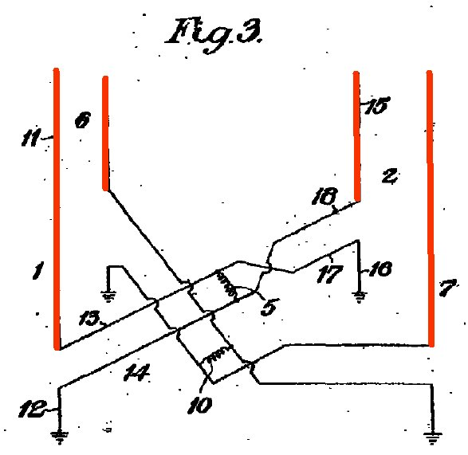
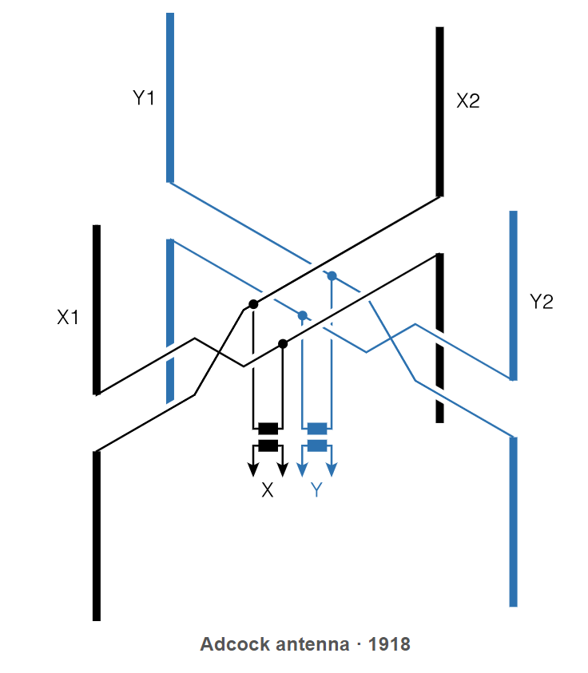
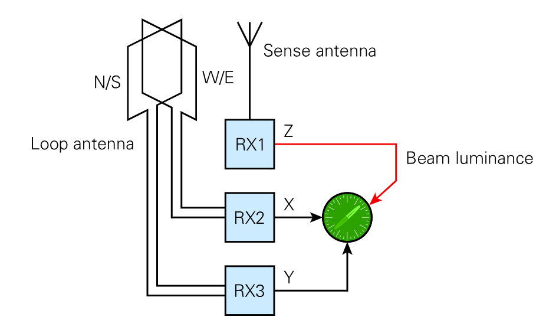
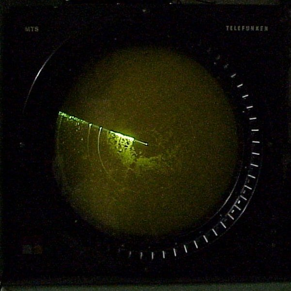

무선 침묵 이야기 (3) - 번개 탐지기
게시: 2024-08-08T06:30:11+09:00
<"좀 더 길게 말해줄 수 없을까?"> 군 작전시, 특히 해군 작전에서 무선 침묵을 엄수하는 이유 중 가장 큰 것은 바로 발신자의 위치 노출. 전파 발신원의 위치를 간단한 loop antenna를 통해 찾아내는 방법은 헤르츠 박사가 이미 1886년 발견하여 세상에 널리 알려져 있었음. 그 원리는 간단한데, 루프 안테나의 둥근 평면을 전파 발신원 방향으로부터 직각 방향에 놓으면, 루프 안테나의 반쪽씩의 호(arc)에 잡히는 전파 신호가 서로를 상쇄하여 null을 만드는 것. 루프 안테나의 둥근 평면이 전파 발신원 방향과 같은 평면으로, 즉 0도 각도에 놓이면 반대로 반쪽씩의 호에 잡히는 전파 신호가 서로를 보강하여 최대 감도가 나옴.

(WW2 당시 독일군이 운용하던 이동식 전파 발신원 탐지 장치. 루프 안테나가 기본.)

(저 안에서 근무하려면 무엇보다 신호의 강도를 귀로 듣고 판단하기 위해 좋은 청력이 필요.)
물론 이를 위해서는 루프 안테나의 원주 길이는 탐지하고자 하는 전파 파장에 맞춰야 했음. 가장 좋은 것은 파장 길이와 같은 것이었으나, WW1 당시 사용하던 1~2 MHz 주파수의 파장은 너무 길어서 1/2 혹은 1/4, 1/8 정도를 사용. 가령 1 MHz만 하더라도 파장 길이가 약 300m 였음. 그렇게 당시 사용하던 긴 파장을 가진 전파의 위치를 파악하려면 그 안테나 길이가 수십 미터가 넘어야 했고, 또 손으로 loop antenna를 이리저리 돌려가며 어느 방향에서 전파 감도가 최대/최저가 되는지 사람의 귀로 찾아내려면 보통 1분 정도의 꽤 긴 시간이 걸렸음.
(이건 미해군의 WW2 초기의 함재 뇌격기 Devastator의 loop antenna 모습. 2015년 영화 'Against the Sun' 중 한 장면.)
WW2 전쟁 영화 보면 무선 통신할 때 가급적 말을 짧게짧게 이야기하는 것을 볼 수 있는데, 그건 치직거리는 열악한 음성 품질을 극복하려면 가급적 짧고 명확하게 이야기해야 하는 것도 있지만 적이 전파 발신원 탐지를 정확하게 해내는 것을 막기 위해서는 발신 시간을 최소화해야 하기 때문.
1941년 12월 진주만을 기습공격 하러 날아가던 일본해군 함재기들도 이런 전파 발신원 탐지를 이용했음. 아무것도 없는 망망대해, 그것도 새벽의 어둠 속에서 약 370km 떨어진 섬을 찾아간다는 것이 말이 쉽지 꽤 어려운 일임. 비행 항로가 처음에 1도만 빗나가도 370km 밖에서는 6.5km 차이가 나기 때문.

(일본해군 함재기 조종사들의 항법 실력이 그렇게 뛰어났을까? 미드웨이 공습도 실수 없이 잘 해낸 것을 보면 뛰어났을 것임. 그러나 쉽고 확실한 방법이 있는데 굳이 안 쓸 이유는 없음.)
그런 어려움을 극복하기 위해 일본해군 함재기 조종사들이 이용한 방법은... 컨닝. 그들은 당시 열심히 방송 중이던 호놀룰루의 KGU 라디오 방송의 발신 방향을 따라 비행했었음. 세상에, 강력한 고품질 전파를 잠시도 쉬지 않고 송출해주다니 이건 완전 어둠 속의 등대였던 것임.

(WW2 당시의 KGU 방송국 로고. 아이러니컬하게도, 진주만 공습 소식을 가장 먼저 미국 본토의 국민들에게 보도한 것도 이 KGU 방송국. 당시 하와이 지역 방송국인 KGU는 본토의 전국 방송국인 NBC 산하에 있었음.)
상업용 라디오 방송국과는 달리 군함이나 폭격기 등 군사적 타겟에서는 무선 통신을 길게 하는 법이 없었으므로, 그렇게 루프 안테나를 돌려 전파 발신 방향을 찾는 것은 시간이 꽤 걸렸음. 따라서 짧은 송신을 위주로 하는 군사용 무전 통신을 감지하는 것은 무리라서 군사적 가치가 초기에는 많이 떨어졌음. 그러나 이런 현실을 바꿔줄 물건이 나옴. 더 나중인 WW2 직전 로열 에어포스의 레이더 개발을 주도했던 Watson-Watt 박사가 1920년대에 만든 '번개 탐지기'. <벼락을 추적하는 사나이>
1920년대 왓슨-왓 박사는 영국 로열 에어포스의 기상청(Met Office)에서 일하고 있었는데, 그의 관심사 중 하나가 바로 벼락이 치는 정확한 위치를 파악하는 것.

(흔히 잘 알려져 있지는 않지만, 우리나라에서 기상예보를 위해 수퍼컴을 운용하는 곳은 기상청만 있는 것이 아님. 한국 공군에서도 기상예보를 위해 자체 수퍼컴을 운용 중. 그만큼 항공 운항에는 기상예보가 매우 중요. 참고로 공군 기상단으로 가는 사병은 진짜 꿀보직이라고.)
벼락은 굉장한 전자기적 현상이기 때문에 당연히 넓은 범위의 파장을 가진 갖가지 전자파를 발생시키는데, 그 중에서도 당시 무선통신에 많이 쓰이던 longwave, 즉 수백 kHz 정도의 전파를 특히 강하게 뿜었음. 이미 당시에 널리 사용하던 RDF (radio direction finding) 기법을 통해서 그 전파를 추적하여 벼락이 어디에 내리쳤는지를 알아낼 수는 있었는데, 문제는 벼락이라는 것이 정말 눈 깜짝할 사이에 나타났다 사라진다는 것. 정확한 위치를 찾으려면 1분 가까이 루프 안테나를 돌려야 했는데, 1분 동안 지속되는 벼락은 존재하지 않았음. 왓슨-왓 박사는 전파 강도를 귀로 듣고 판단하는 것보다는 CRT (브라운 관)를 통해 좀더 빠르고 분명하게 찾을 수 있다고 생각했으나, 그건 아이디어로만 끝나고 자금 부족으로 실제 연구로는 이어지지 못했음.

(오랜만에 다시 보는 왓슨-왓 박사님)
그런데 1924년 기상청이 부지를 이전할 일이 생겼는데, 새로 이사한 사이트에 와보니 거기엔 Adcock 안테나와 Bell 연구소에서 만든 최신식 oscilloscope WE-224가 갖춰져 있었음. 그 애드콕 안테나는 5년 전인 1919년, 그 애드콕 특허가 나오자마자 연구용으로 세웠던 것인데, 세워놓고 보니 너무 커서 실용적인 가치가 없다고 보고 방치되어 있던 것.

(WW2 기간 중 라바울에 설치된 일본군의 2 MHz 전파 방향 탐지용 안테나. 저렇게 4개의 수직 monopole (단극자 안테나)를 세워놓은 것을 Adcock 안테나라고 하는데, WW1 당시 영국 원정군 소속 장교이자 엔지니어였던 Frank Adcock가 고안하여 전쟁 중에 특허를 제출한 것. 물론 일본군이 애드콕에게 특허 라이선스를 지불했을 것 같지는 않음. 핵심은 4개의 꼭지점 안테나이고 가운데 있는 것은 선택사양으로 존재하는 음성 송출용 안테나.)

(그림은 애드콕이 제출한 Adcock 안테나의 특허출원에 포함된 도면. 이는 하는데, Adcock 안테나의 원리도 loop 안테나와 동일. 기본적으로는 서로 직각으로 겹쳐 놓은 사각형 루프 두개에서 위아래의 가로축을 제거하고 세로축만 남겨놓은 것으로 보면 됨. 저렇게 가로축을 제거한 기본적인 이유는 긴 파장의 전파가 전리층과 지표면에 핑퐁식으로 반사되어 오면서 수평으로 극성을 띤 반사파에 의헤 간섭을 받아 깨끗한 전파를 수신하기가 어렵다는 점을 극복하기 위핸 것. 저렇게 서로 직각을 이루는 2개의 사각형 루프 안테나에 감지되는 전파의 상대적 강도를 비교하여 안테나를 회전시키지 않고도 전파의 발신 방향을 찾을 수 있는 것.)

(위와 동일한 그림인데 현대적으로 좀 더 친절하게 그린 그림)
왓슨-왓 박사는 그 버려진 애드콕 안테나를 손보고 그 각쌍의 신호선을 오실로스코프의 X축 Y축에 연결. 결과는 대성공. 멀리서 발생한 벼락이 방출하는 순간적인 전파를 효과적으로 잡아내어 방위각을 측정하는 것이 가능. 특히 그 오실로스코프 화면은 빛이 서서히 사라지는 인광(slow-decay phosphorescence)을 사용했으므로 순간적인 신호도 사람의 눈으로 충분히 볼 수 있었음.

(왓슨-왓 박사가 만든 번개탐지기. 실은 번개탐지기란 이름은 그냥 이 포스팅에서만 쓰는 것이고, 보통 부르는 이름은 Cathode-Ray Direction Finding (CRDF), Twin-Path DF, Watson-Watt DF 등등.)

(나중에 개발된 레이더의 PPI (plan position indicator) scope의 화면도 빛이 서서히 사라지는 인광이 없었다면 불가능했을 이야기) 결국 왓슨-왓 박사는 동료와 함께 공저로 "즉응성 방향 탐지 전파 방위기" (An instantaneous direct-reading radiogoniometer)라는 촌스러운 이름의 논문을 발표했는데, 0.001초만 지속되는 신호에 대해서도 방위각 탐지가 가능하다는 것. 이 공개 논문에는 그 원리와 장치 구조 등이 매우 상세히 적혀 있어서 누구라도 읽을 수 있었음. 이 발명 또는 발견으로 인해 WW1과 WW2 사이의 전간기 동안 유럽 각국의 군용 전파 기술은 비약의 발전을... 할 것 같았으나 전혀 아니었음. 왓슨-왓도 항공 안전에 중요한 낙뢰 위치 파악에 관심이 있었을 뿐이고, 로열 에어포스 관계자들은 그냥 아예 관심이 없었으며, 영국 밖에서도 그 누구도 관심을 주지 않았음.
그러나 이 번개 탐지기는 의외의 역할을 Battle of Britain에서 수행함. 과묵한 줄 알았던 독일 루프트바페 조종사들이 의외로 말이 많아서 영국을 폭격하러 오면서도 조잘조잘 무선통신으로 수다를 떨었기 때문일까? 물론 아님. 번개 탐지기가 추적한 대상은...
(다음 주에 계속)